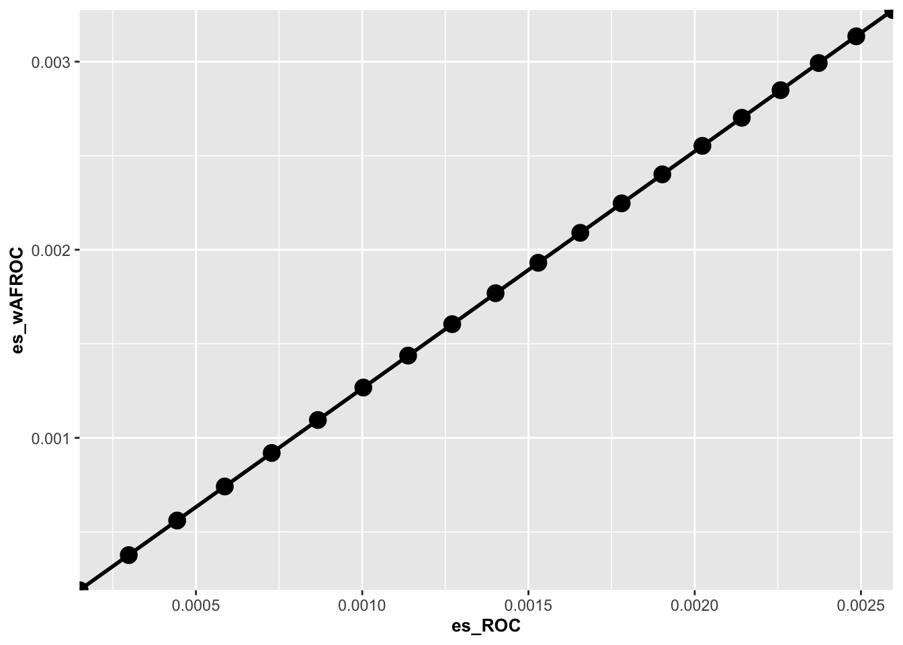

Chapter 10 Sample size estimation for FROC studies
10.2 Overview
This chapter is split into two parts.
The first part goes into the details of FROC paradigm sample size estimation.
The second part encapsulates most of the details in a new function
SsFrocNhRsmModel(), which encapsulates some of the code in the first part (that relating to building the NH model), thereby making it easier for the user to perform FROC sample size estimation.
These parts are independently included in two RJafroc vignettes (on the GitHub master branch, not the CRAN uploaded version). These are located at:
https://dpc10ster.github.io/RJafroc/articles/Ch19Vig1FrocSampleSize.html
https://dpc10ster.github.io/RJafroc/articles/Ch19Vig2FrocSampleSize.html
10.3 Part 1
10.3.1 Introduction
FROC sample size estimation is not fundamentally different from the procedure outlined in TBA Chapter 11 for the ROC paradigm. To recapitulate, based on analysis of a pilot ROC dataset and using a specified FOM, e.g., FOM = Wilcoxon, and either method = "DBM" or method = "OR" for significance testing, one estimates the intrinsic variability of the data expressed in terms of variance components. For DBM analysis, these are the pseudovalue variance components, while for OR analysis these are the FOM treatment-reader variance component and the FOM covariances. The second step is to specify a clinically realistic effect-size, e.g., the anticipated AUC difference between the two modalities. Given these values, the sample size functions implemented in RJafroc (beginning with Ss) allow one to estimate the number of readers and cases necessary to detect (i.e., reject the null hypothesis) the modality AUC difference at specified Type II error rate \(\beta\), typically chosen to be 20% - corresponding to 80% statistical power - and specified Type I error rate \(\alpha\), typically chosen to be 5%.
In FROC analysis the only difference, indeed the critical difference, is the choice of FOM; e.g., FOM = "wAFROC" instead of the inferred ROC-AUC, FOM = "HrAuc". The FROC dataset is analyzed using either the DBM or the OR method. This yields the necessary variance components or the covariance matrix corresponding to the wAFROC-AUC. The next step is to specify the effect-size in wAFROC-AUC units. The ROC-AUC has a historically well-known interpretation: the classification ability at separating diseased patients from non-diseased patients while the wAFROC-AUC does not. Needed is a way of relating the effect-size in ROC-AUC units to one in wAFROC-AUC units: as should be obvious this requires a physical model, e.g., the RSM, that predicts both ROC and wAFROC curves and the respective AUCs.
- One chooses an ROC-AUC effect-size that is realistic, one that clinicians understand and can therefore participate in, in the effect-size postulation process. Lacking such information I recommend, based on past ROC studies, 0.03 as typical of a small effect size and 0.05 as typical of a moderate effect size.
- One converts the ROC effect-size to a wAFROC-AUC effect-size. The method for this is described in the next section.
- One uses the sample size tools in in
RJafrocto determine sample size or power.
It is important to recognize is that all quantities have to be in the same units. When performing ROC analysis, everything (variance components and effect-size) has to be in units of the selected FOM, e.g., FOM = "Wilcoxon" which is identical to the empirical ROC-AUC. When doing wAFROC analysis, everything has to be in units of the wAFROC-AUC, i.e., FOM = "wAFROC". The variance components and effect-size in wAFROC-AUC units will be different from their corresponding ROC counterparts. In particular, as shown next, an ROC-AUC effect-size of 0.05 generally corresponds to a larger effect-size in wAFROC-AUC units. The reason for this is that the range over which wAFROC-AUC can vary, namely 0 to 1, is twice the corresponding ROC-AUC range.
The next section explains the steps used to implement #2 above.
10.3.2 Relating an ROC effect-size to a wAFROC effect-size
If there are more than two treatments in the pilot dataset extract those treatments that represent null hypothesis data: for example
DfExtractDataset(dataset, trts = c(1,2,4))extracts treatments 1, 2 and 4. Save the extracted dataset todataset. More than two treatments can be used if they have similar FOMs as the averaging/ian procedure described below benefits from more data. However, the final sample size predictions are restricted to two treatments.If the original data is FROC, convert it to ROC using
DfFroc2Roc(dataset): this is because the RSM fits binned ROC data. The ROC dataset isrocDataset.If the data uses continuous scale ratings, bin the data using
DfBinDataset(rocDataset, opChType = "ROC"). The default number of bins should be used. Unlike binning using arbitrarily set thresholds, the thresholds found byDfBinDatasetare unique in that they maximize ROC-AUC. The binned dataset isrocDatasetB.For each treatment and reader the inferred ROC data is fitted by
FitRsmRoc(), see example below, yielding estimates of the RSM physical (or pri) parameters (not the intrinsic values).The following example uses the first two treatments of the “FED” dataset,
dataset04, which is a 5 treatment 4 radiologist FROC dataset acquired by Dr. Federica Zanca et. al. (Zanca et al. 2009a). The dataset has 5 treatments and 4 readers and 200 cases and was acquired on a 5-point integer scale, i.e., it is already binned. If not one needs to bin the dataset usingDfBinDataset(). I need to emphasize this point: if the dataset represents continuous ratings, as with a CAD algorithm, one must bin the dataset.The reason for using RSM parameter values only for the first two treatments is that these were found (Zanca et al. 2009a) to be almost equivalent (more precisely, the NH could not be rejected for the first two treatments, so it makes sense to regard them as “almost” NH treatments.
The following code block defines the pilot FROC data
frocData(corresponding todataset04, which is the “FED” dataset, but with only treatments 1 and 2 extracted, usingDfExtractDataset()) androcData, i.e., the highest-rating ROC dataset inferred from the FROC dataset usingDfFroc2Roc().
frocData <- DfExtractDataset(dataset04, trts = c(1,2))
rocData <- DfFroc2Roc(frocData)
rocDataB <- DfBinDataset(rocData, opChType = "ROC") # unnecessary as data is already binned
# but cant hurtThe next code block determines lesDistr, the lesion distribution array, which has Lmax (maximum number of lesions per diseased case over the dataset) rows and two columns. The first column contains the integers 1, 2, …, Lmax and the second column contains the fraction of diseased cases with the number of lesions per case specified in the first column. The second column will sum to unity. The RSM fitting algorithm needs to know how lesion-rich the dataset is, as the RSM predicted ROC-AUC depends on the lesion-richness of the dataset. For reasons that will become clear below, one also needs the distribution of the lesion weights. Note that lesDist is determined from the FROC dataset as the lesion-richness information is lost upon conversion to an ROC dataset. The PlotRsmOperatingCharacteristics function used below sets relWeights = 0, which ensures equally weighted lesions: on cases with one lesion the weight of the lesion is unity, on cases with two lesions the weights of each lesion is 1/2 and on cases with three lesions the weight of each lesion is 1/3, etc.. TBA due to changes in lesDist etc.
lesDistr <- UtilLesionDistrVector(frocData)
print(lesDistr)## [1] 0.69 0.20 0.11For this dataset Lmax is 3, and fraction 0.69 of diseased cases have one lesion, fraction 0.2 of diseased cases have two lesions and fraction 0.11 of diseased cases have three lesions.
The next code block determines the number of treatments and readers (I and J) from the dimensions of the frocData$ratings$NL array. It creates an array RsmParms to hold the RSM fitted parameter values. For each treatment and reader it applies the fitting algorithm FitRsmRoc(). The first three returned values are mu, lambda and nu, corresponding to RSM parameters \({\mu}\), \({\lambda'}\) and \({\nu'}\).
I <- dim(frocData$ratings$NL)[1]
J <- dim(frocData$ratings$NL)[2]
RsmParms <- array(dim = c(I,J,3))
for (i in 1:I) {
for (j in 1:J) {
x1 <- FitRsmRoc(rocDataB, trt = i, rdr = j, lesDistr)
RsmParms[i,j,1] <- x1[[1]] # mu
RsmParms[i,j,2] <- x1[[2]] # lambda
RsmParms[i,j,3] <- x1[[3]] # nu
}
}I recommend taking the ian of each of the parameters, over all treatment-reader indices, as representing the average NH dataset. The ian is less sensitive to outliers than the mean.
mu <- median(RsmParms[,,1])
lambda <- median(RsmParms[,,2])
nu <- median(RsmParms[,,3])The defining values of the fitting model are mu = 3.3121519, lambda = 1.714368 and nu = 0.7036564. Note that these obey the constraints lambda > 0 and 0 < nu < 1. We are now ready to calculate the expected NH FOMs using the ROC -AUC and the wAFROC FOM.
aucRocNH <- PlotRsmOperatingCharacteristics(mu, lambda, nu,
lesDistr = lesDistr, OpChType = "ROC")$aucROC
aucwAfrocNH <- PlotRsmOperatingCharacteristics(mu, lambda, nu,
lesDistr = lesDistr, OpChType = "wAFROC")$aucwAFROCThe plotting function
PlotRsmOperatingCharacteristics()returns a number of other objects, most importantly the plot, but here we use only the AUC, which is obtained by numerical integration of the predicted operating characteristics.One has
aucRocNH = 0.8791542andaucwAfrocNH = 0.7199233. Note that the wAFROC-FOM is smaller than the ROC-FOM as it includes the localization constraint.To induce the alternative hypothesis condition, one increments \(\mu_{NH}\) by \(\Delta_{\mu}\). The resulting ROC-AUC and wAFROC-AUC are calculated, again by numerical integration of the RSM predicted ROC and wAFROC curves, leading to the corresponding effect-sizes (note that in each equation below one takes the difference between the AH value minus the NH value):
The next step is to calculate the effect size (new value minus the NH value) using ROC and wAFROC FOMs for a series of specified
deltaMuvalues. This generates values that can be used to interpolate a wAFROC effect size for a specified ROC effect size.
deltaMu <- seq(0.01, 0.2, 0.01) # values of deltaMu to scan below
esRoc <- array(dim = length(deltaMu));eswAfroc <- array(dim = length(deltaMu))
for (i in 1:length(deltaMu)) {
esRoc[i] <- PlotRsmOperatingCharacteristics(
mu + deltaMu[i], lambda, nu, lesDistr = lesDistr, OpChType = "ROC")$aucROC - aucRocNH
eswAfroc[i] <- PlotRsmOperatingCharacteristics(
mu+ deltaMu[i], lambda, nu, lesDistr = lesDistr, OpChType = "wAFROC")$aucwAFROC - aucwAfrocNH
cat("ES_ROC = ", esRoc[i], ", ES_wAFROC = ", eswAfroc[i],"\n")
}## ES_ROC = 0.0001500649 , ES_wAFROC = 0.000189712
## ES_ROC = 0.0002978454 , ES_wAFROC = 0.0003764812
## ES_ROC = 0.0004433681 , ES_wAFROC = 0.0005603432
## ES_ROC = 0.0005866597 , ES_wAFROC = 0.0007413331
## ES_ROC = 0.0007277463 , ES_wAFROC = 0.0009194859
## ES_ROC = 0.0008666543 , ES_wAFROC = 0.001094837
## ES_ROC = 0.001003409 , ES_wAFROC = 0.00126742
## ES_ROC = 0.001138038 , ES_wAFROC = 0.001437269
## ES_ROC = 0.001270565 , ES_wAFROC = 0.00160442
## ES_ROC = 0.001401017 , ES_wAFROC = 0.001768904
## ES_ROC = 0.001529418 , ES_wAFROC = 0.001930757
## ES_ROC = 0.001655794 , ES_wAFROC = 0.002090012
## ES_ROC = 0.00178017 , ES_wAFROC = 0.002246701
## ES_ROC = 0.00190257 , ES_wAFROC = 0.002400857
## ES_ROC = 0.002023021 , ES_wAFROC = 0.002552513
## ES_ROC = 0.002141544 , ES_wAFROC = 0.002701702
## ES_ROC = 0.002258166 , ES_wAFROC = 0.002848455
## ES_ROC = 0.002372911 , ES_wAFROC = 0.002992804
## ES_ROC = 0.002485801 , ES_wAFROC = 0.00313478
## ES_ROC = 0.002596862 , ES_wAFROC = 0.003274416Here is a plot of wAFROC effect size (y-axis) vs. ROC effect size.
df <- data.frame(es_ROC = esRoc, es_wAFROC = eswAfroc)
p <- ggplot(data = df, aes(x = es_ROC, y = es_wAFROC)) +
geom_smooth(method = "lm", se = FALSE, color = "black", formula = y ~ x) +
geom_point(size = 4) +
scale_color_manual(values = "black") +
theme(axis.title.y = element_text(size = 10,face="bold"),
axis.title.x = element_text(size = 10,face="bold")) +
scale_x_continuous(expand = c(0, 0)) +
scale_y_continuous(expand = c(0, 0))
print(p)
The plot is very close to linear. This makes it easy to design an interpolation function. In the following code block the first line fits eswAfroc vs. esRoc using the linear model lm() function constrained to pass through the origin (the minus one): scaleFactor <- lm(eswAfroc ~ -1 + esRoc). One expects this constraint since for deltaMu = 0 the effect size must be zero no matter how it is measured.
scaleFactor<-lm(eswAfroc~-1+esRoc) # fit values to straight line thru origin
effectSizeROC <- seq(0.01, 0.1, 0.01)
effectSizewAFROC <- effectSizeROC*scaleFactor$coefficients[1] # r2 = summary(scaleFactor)$r.squaredThe slope of the zero-intercept constrained straight line fit is scaleFactor = 1.2617239 and the squared correlation coefficient is R2 = 0.9999997. Therefore, the conversion from ROC to wAFROC effect size is: effectSizewAFROC = scaleFactor * effectSizeROC. The wAFROC effect size is twice the ROC effect size. All that remains is to calculate the variance components using the two FOMs.
10.3.3 Computing the respective variance components
The code block applies StSignificanceTesting() to rocData and frocData, using the appropriate FOM, and extracts the variance components.
temp1 <- StSignificanceTesting(rocData, FOM = "Wilcoxon", method = "DBM", analysisOption = "RRRC")
temp2 <- StSignificanceTesting(frocData, FOM = "wAFROC", method = "DBM", analysisOption = "RRRC")
varCompROC <- temp1$ANOVA$VarCom
varCompwAFROC <- temp2$ANOVA$VarComThe observed wAFROC effect-size is -0.00685625. This is a very small effect size; the corresponding ROC effect-size is -0.0051; the sign does not affect the calculations, which is too small to reach 80% power. It is not surprising that the study (Zanca et al. 2009a) did not find a significant difference between these two treatments
The respective variance components are:
print(varCompROC)## Estimates
## VarR 0.00082773798
## VarC 0.03812334734
## VarTR 0.00015265067
## VarTC 0.00964432675
## VarRC 0.00354419640
## VarErr 0.09484636574print(varCompwAFROC)## Estimates
## VarR 0.00185422886
## VarC 0.06117804981
## VarTR -0.00044392794
## VarTC 0.01016518621
## VarRC 0.01355883396
## VarErr 0.09672559908Only terms involving treatment are relevant to sample size. The wAFROC varTC and varErr values are slightly larger than the ROC ones - as expected - because the range of the wAFROC FOM is twice that of the ROC FOM.
10.3.4 Comparing ROC power to wAFROC power for equivalent effect-sizes
We are now ready to compare ROC and wAFROC powers for equivalent effect sizes. The following example is for 5 readers (JPivot) and 100 cases (KPivot) in the pivotal study.
powerROC <- array(dim = length(effectSizeROC));powerwAFROC <- array(dim = length(effectSizeROC))
JPivot <- 5;KPivot <- 100
for (i in 1:length(effectSizeROC)) {
varYTR <- varCompROC["VarTR","Estimates"] # these are pseudovalue based variance components assuming FOM = "Wilcoxon"
varYTC <- varCompROC["VarTC","Estimates"]
varYEps <- varCompROC["VarErr","Estimates"]
ret <- SsPowerGivenJK(dataset = NULL, FOM = "Wilcoxon", J = JPivot, K = KPivot, analysisOption = "RRRC", effectSize = effectSizeROC[i], method = "DBM", LegacyCode = TRUE,
list(VarTR = varYTR, VarTC = varYTC, VarErr = varYEps))
powerROC[i] <- ret$powerRRRC
varYTR <- varCompwAFROC["VarTR","Estimates"] # these are pseudovalue based variance components assuming FOM = "wAFROC"
varYTC <- varCompwAFROC["VarTC","Estimates"]
varYEps <- varCompwAFROC["VarErr","Estimates"]
ret <- SsPowerGivenJK(dataset = NULL, FOM = "Wilcoxon", J = JPivot, K = KPivot, analysisOption = "RRRC", effectSize = effectSizewAFROC[i], method = "DBM", LegacyCode = TRUE,
list(VarTR = varYTR, VarTC = varYTC, VarErr = varYEps))
powerwAFROC[i] <- ret$powerRRRC
cat("ROC-ES = ", effectSizeROC[i], ", wAFROC-ES = ", effectSizewAFROC[i],
", Power-ROC = ", powerROC[i], ", Power-wAFROC = ", powerwAFROC[i], "\n")
}## ROC-ES = 0.01 , wAFROC-ES = 0.012617239 , Power-ROC = 0.064430457 , Power-wAFROC = 0.075439644
## ROC-ES = 0.02 , wAFROC-ES = 0.025234479 , Power-ROC = 0.10878897 , Power-wAFROC = 0.15449773
## ROC-ES = 0.03 , wAFROC-ES = 0.037851718 , Power-ROC = 0.18471152 , Power-wAFROC = 0.28797922
## ROC-ES = 0.04 , wAFROC-ES = 0.050468957 , Power-ROC = 0.29079274 , Power-wAFROC = 0.4612966
## ROC-ES = 0.05 , wAFROC-ES = 0.063086196 , Power-ROC = 0.41954431 , Power-wAFROC = 0.6420946
## ROC-ES = 0.06 , wAFROC-ES = 0.075703436 , Power-ROC = 0.55738123 , Power-wAFROC = 0.79495349
## ROC-ES = 0.07 , wAFROC-ES = 0.088320675 , Power-ROC = 0.68816012 , Power-wAFROC = 0.90003872
## ROC-ES = 0.08 , wAFROC-ES = 0.10093791 , Power-ROC = 0.79836108 , Power-wAFROC = 0.95891383
## ROC-ES = 0.09 , wAFROC-ES = 0.11355515 , Power-ROC = 0.88095077 , Power-wAFROC = 0.98585038
## ROC-ES = 0.1 , wAFROC-ES = 0.12617239 , Power-ROC = 0.93606799 , Power-wAFROC = 0.9959336Since the wAFROC effect size is about a factor of two larger than the ROC effect size, wAFROC power is larger than that for ROC. The effect is magnified as the effect size enters as the square in the formula for the power (this overwhelms the slight increase in variability of wAFROC-FOM relative to ROC-FOM noted previously). The following is a plot of the respective powers.
df <- data.frame(power_ROC = powerROC, power_wAFROC = powerwAFROC)
p <- ggplot(mapping = aes(x = power_ROC, y = power_wAFROC)) +
geom_line(data = df, size = 2)+
scale_color_manual(values = "black") +
theme(axis.title.y = element_text(size = 10,face="bold"),
axis.title.x = element_text(size = 10,face="bold")) +
scale_x_continuous(expand = c(0, 0)) +
scale_y_continuous(expand = c(0, 0))## Warning: Using `size` aesthetic for lines was deprecated in ggplot2 3.4.0.
## ℹ Please use `linewidth` instead.
## This warning is displayed once every 8 hours.
## Call `lifecycle::last_lifecycle_warnings()` to see where this warning was
## generated.print(p)
10.4 Part 2
10.4.1 Introduction
This example uses the FED dataset as a pilot FROC study and function SsFrocNhRsmModel() to construct the NH model (encapsulating some of the code in the first part).
10.4.2 Constructing the NH model for the dataset
One starts by extracting the first two treatments from dataset04, which represent the NH dataset, see previous part. Next one constructs the NH model - note that the lesion distribution lesDistr can be specified here independently of that in the pilot dataset. This allows some control over selection of the diseased cases in the pivotal study.
lesDistr <- c(0.7, 0.2, 0.1)
frocNhData <- DfExtractDataset(dataset04, trts = c(1,2))
ret <- SsFrocNhRsmModel(frocNhData, lesDistr = lesDistr)
mu <- ret$mu
lambda <- ret$lambda
nu <- ret$nu
scaleFactor <- ret$scaleFactorThe fitting model is defined by mu = 3.31491361, lambda = 1.6930673 and nu = 0.70649936 and lesDistr. The effect size scale factor is 1.25445833.
aucRocNH <- PlotRsmOperatingCharacteristics(mu, lambda, nu,
lesDistr = lesDistr, OpChType = "ROC")$aucROC
aucwAfrocNH <- PlotRsmOperatingCharacteristics(mu, lambda, nu,
lesDistr = lesDistr, OpChType = "wAFROC")$aucwAFROCThe null hypothesis ROC AUC is 0.8790548 and the corresponding NH wAFROC AUC is 0.72320816.
10.4.3 Extracting the wAFROC variance components
The next code block applies StSignificanceTesting() to frocNhData, using FOM = "wAFROC" and extracts the variance components.
varCompwAFROC <- StSignificanceTesting(frocNhData, FOM = "wAFROC", method = "DBM", analysisOption = "RRRC")$ANOVA$VarCom10.4.4 wAFROC power for specified ROC effect size, number of readers J and number of cases K
The following example is for ROC effect size = 0.05, 5 readers (J = 5) and 100 cases (K = 100) in the pivotal study.
ROC_ES <- 0.05
effectSizewAFROC <- scaleFactor * ROC_ES
J <- 5;K <- 100
varYTR <- varCompwAFROC["VarTR","Estimates"]
varYTC <- varCompwAFROC["VarTC","Estimates"]
varYEps <- varCompwAFROC["VarErr","Estimates"]
ret <- SsPowerGivenJK(dataset = NULL, FOM = "Wilcoxon", J = J, K = K, analysisOption = "RRRC",
effectSize = effectSizewAFROC, method = "DBM", LegacyCode = TRUE,
list(VarTR = varYTR,
VarTC = varYTC,
VarErr = varYEps))
powerwAFROC <- ret$powerRRRC
cat("ROC-ES = ", ROC_ES, ", wAFROC-ES = ", ROC_ES * scaleFactor, ", Power-wAFROC = ", powerwAFROC, "\n")## ROC-ES = 0.05 , wAFROC-ES = 0.062722916 , Power-wAFROC = 0.6371324410.4.5 wAFROC number of cases for 80% power for a given number of readers J
VarTR <- varCompwAFROC["VarTR","Estimates"]
VarTC <- varCompwAFROC["VarTC","Estimates"]
VarErr <- varCompwAFROC["VarErr","Estimates"]
ret2 <- SsSampleSizeKGivenJ(dataset = NULL, J = 6, effectSize = effectSizewAFROC, method = "DBM", LegacyCode = TRUE,
list(VarTR = VarTR, VarTC = VarTC, VarErr = VarErr))
cat("ROC-ES = ", ROC_ES, ", wAFROC-ES = ", ROC_ES * scaleFactor,
", K80RRRC = ", ret2$KRRRC, ", Power-wAFROC = ", ret2$powerRRRC, "\n")## ROC-ES = 0.05 , wAFROC-ES = 0.062722916 , K80RRRC = 123 , Power-wAFROC = 0.8021088710.4.6 wAFROC-FOM power for a given number of readers J and cases K
ret3 <- SsPowerGivenJK(dataset = NULL, J = 6, K = ret2$KRRRC, effectSize = effectSizewAFROC, method = "DBM", LegacyCode = TRUE,
list(VarTR = VarTR, VarTC = VarTC, VarErr = VarErr))
cat("ROC-ES = ", ROC_ES, ", wAFROC-ES = ", ROC_ES * scaleFactor,
", powerRRRC = ", ret3$powerRRRC, "\n")## ROC-ES = 0.05 , wAFROC-ES = 0.062722916 , powerRRRC = 0.80210887The estimated power is close to 80% as the number of cases (ret2$KRRRC = 123) was chosen deliberately from the previous code block.